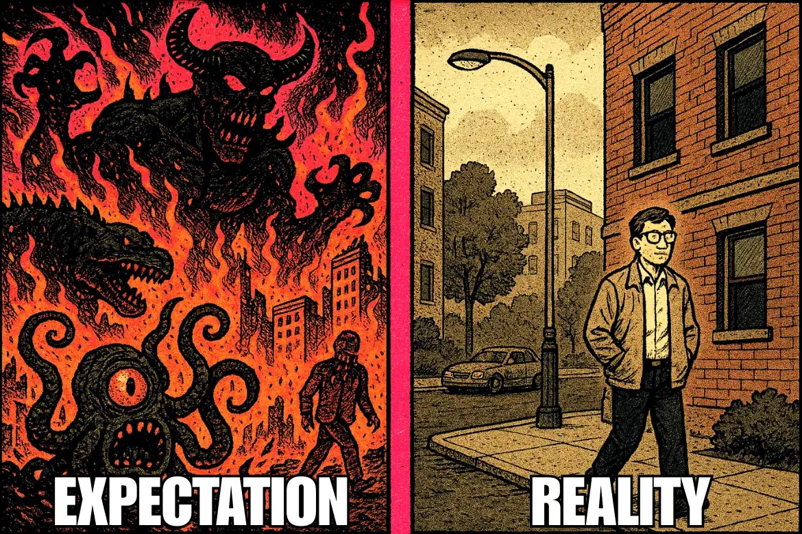
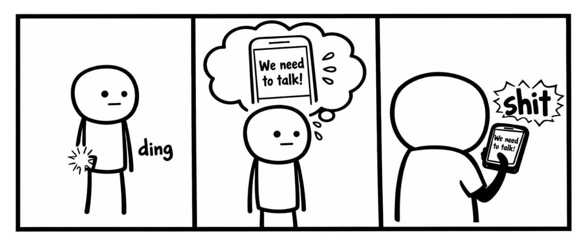

Your brain isn't a crystal ball. It's closer to a Magic 8-Ball with all the positive options removed — a prediction machine utterly convinced of its own accuracy. And most of the time, it's about as reliable as drunk-me announcing, "this is definitely my last drink."
As I got more comfortable with CBT and DBT and started going deeper into the neuroscience, one question kept nagging at me: What single practice would create the biggest long-term shift? If I had to bet everything on one exercise — one thing with the most neurological leverage — what would it be?
What I kept landing on was this: CBT and DBT are both powerful on their own, but when thought and behaviour shift at the same time, something different happens. The neuroscience has a name for it — a prediction error — the moment when what your brain expected and what actually happened don't match. That gap is one of the places where real rewiring can begin. And every time I came back to that, I kept arriving at the same place: the behavioural experiment.
I've also built in a "why it works" section throughout — because I can't help myself, and because understanding the mechanics matters. So even if part of you is sitting there thinking "this is stupid" or "nothing is happening" — you'll know exactly what's going on underneath. And if you're still skeptical? Your first experiment can be testing whether this experiment even works. That counts.
When fear stops you from acting — from speaking up, trying something new, confronting someone, or walking into a room that makes your chest tighten — your brain isn't warning you. It's writing fiction. Fiction that feels real. Fiction your body responds to as if it's already happening. But a prediction is still only a theory. And the only way to know — the only way to actually know — is to run the experiment.
This is CBT logic-testing meets DBT emotional grit. You face the fear, move anyway, and collect actual data instead of recycling the same story. It's one of the more effective tools we have for reshaping both biology and psychology — not because it's comfortable, but because recovery has never once been a comfort-first process. The moments in my own life that came loaded with the most dread were almost always the exact moments I most needed to walk through.
So you might as well make the discomfort useful.
Optional add-ons are listed below each step. Think of them as "neural amplifiers" — the small adjustments that help the experience actually stick rather than slide off.
Not every fear is meant to be "just pushed through."
If your prediction involves a realistic risk of abuse, violence, coercion, or a boundary being violated, the experiment isn't "do it anyway" — it's "get support, prioritize safety, and consider involving a therapist or safety plan." The Reality Test is for anxiety-driven predictions. Not dangerous situations.

This isn’t confidence-building dressed up in scientific language. There’s a specific mechanism at work — and it’s worth understanding, because knowing why something works makes it easier to trust the process when it doesn’t feel like it’s working.
Your brain is a prediction machine. At every moment it’s running a model of what’s about to happen. Dopamine neurons in your midbrain are constantly comparing that model against what actually arrives. When reality matches the prediction, nothing changes. When reality contradicts it, the brain is forced to update. Neuroscientist Wolfram Schultz identified this as the reward prediction error — one of the primary mechanisms by which the brain learns anything at all. (Schultz, Dialogues in Clinical Neuroscience, 2016)
Fear survives on untested predictions. Avoidance is the mechanism that keeps those predictions safe from contradiction. Every time you don’t walk into the room, your brain’s threat model goes unchallenged — and consolidates. The fear doesn’t stay the same size. It grows.
The behavioural experiment breaks that loop. When you move toward the feared thing and the catastrophe doesn’t arrive, your brain receives a prediction error it cannot ignore. The old threat model is wrong. The brain updates. Repeat that enough times and the prediction itself changes — not through insight, not through affirmation, but through data the brain cannot argue with.
It works across every version of the struggle — social anxiety, depression, addiction, impostor syndrome. Whatever your brain has been predicting, the antidote is the same: run the experiment. Let reality write the ending instead of fear.
That’s not metaphor. That’s the mechanism.
And that’s why this works even when it doesn’t feel like it’s working.
I didn't build this page to blow smoke at you. Not every fear is irrational. Not everything goes well just because you decided to face it. We both know better than that. Even a busted clock is right twice a day.
What behavioural experiments do show — consistently, reliably, across decades of research — is that the chest-tightening, "THIS WILL DEFINITELY HAPPEN" predictions almost never play out the way your brain insists they will. And on the rare occasions they do? They're almost never the world-ending event fear sold you.
But here's the part I didn't understand for a long time — and I mean really didn't understand, not just intellectually: I preferred keeping the terrifying outcome locked in my head rather than dealing with it. Not because I thought it would stay manageable in there. Because as long as it lived only in my head, it hadn't been decided yet. The moment you move, the outcome gets determined. It stops being a floating catastrophe and becomes something actual. And that moment — the one right before reality arrives — was always where I came apart.
So I'd avoid. And I was good at it. Masterclass-level. And I'd tell myself the thing most avoiders tell themselves: it'll probably just resolve itself. It almost never did. What actually happened was the opposite — every day I left it alone, my discomfort with confronting it grew slightly faster than my tolerance for sitting with it. The gap widened. The thing got bigger. The avoidance that felt like relief on Monday felt like paralysis by Friday. And somehow, the dread of addressing it was always just a half-step ahead of my ability to do it.
And none of it was Armageddon. That's the part that still gets me. The fears I finally walked toward — the ones I'd been rehearsing as catastrophes — almost never became what I'd promised myself they would. And the moment I actually moved, the endless loop of "what if" became "what now." That shift. That's the whole thing.
That said — here's the part a lot of recovery content will quietly tiptoe around: sometimes the thing you're afraid of actually happens. The awkward moment arrives. The rejection lands. The conflict you could barely tolerate imagining finally shows up at the door.

And yea — it's probably not going to be awesome. It might hurt in ways that linger longer than you'd like. But it will no longer be hypothetical. And once something is real, you can work with it. Real things can be responded to, navigated, learned from, and eventually left behind. A fear with no expiry date is far more destructive than a bad day with an ending.
The difficult things still happen. They just happen far less often — and land far less catastrophically — than fear predicted. And with each experiment, you learn two things at once, without trying: most fears dissolve the moment reality shows up, and the ones that don't dissolve become stepping stones instead of stop signs. That distinction is everything.
This is how you build resilience that isn't delusional. Not "positive vibes only." Not blind optimism dressed up as courage. Evidence. Experience. Repetition. You learn that the world isn't as dangerous as your nervous system insists — and that when it does get hard, you are more capable of handling it than you believed.
This is the real win:
not that life gets easier — but that you become someone who can handle it when it doesn't. Someone who acts, observes, learns, and keeps moving — even when things go exactly as badly as you feared they would.
It's about retraining a brain that spent years treating fear as fact — and learning, slowly and through actual evidence, that it was wrong.
Every time you test a prediction against reality — and meet the moment with awareness instead of avoidance — you carve a new path. Not metaphorically. Neurologically. The brain that once told you the room was dangerous gets new information. And new information, repeated often enough, becomes the new default.
That's the whole game. Not happiness. Not fearlessness. Not some distant version of yourself who has it all figured out. And not "fake it till you make it" either — that particular piece of advice can go straight to hell. Just a brain that's slightly less convinced the worst is coming — and a person who moves anyway, even when it isn't. Not performing confidence you don't have — doing the thing while genuinely terrified, hands shaking, voice cracking, stomach in open revolt, and finding out what happens when you do.
Each experiment makes the next one cheaper. The fear doesn't disappear — but its grip loosens, its voice gets quieter, and the gap between feeling afraid and acting anyway starts to close. That gap is where your life actually lives.
Build it one experiment at a time.
Follow the next step in order, or branch out into related topics.